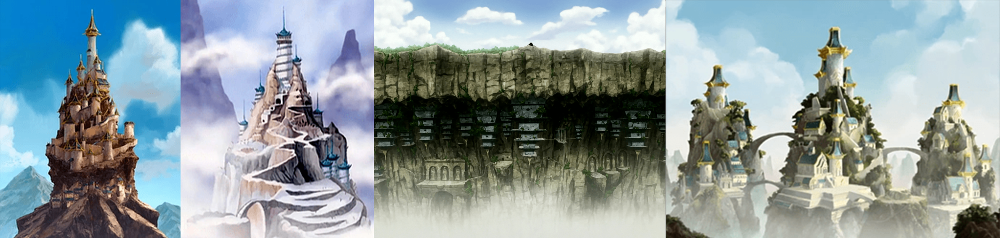
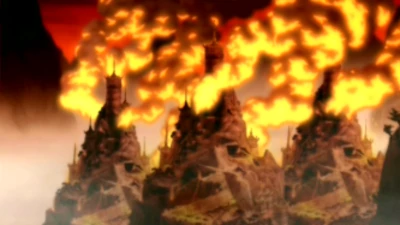
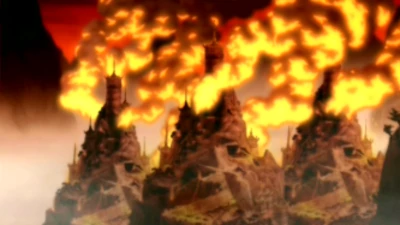

The Four Nations
Air Nomads
Air Nomads is the collective term for the monastic order of men and women who practice the discipline of airbending and the pacifistic ethics of their theocratic society. One of the four nations, the Air Nomads were wanderers by definition, but had four air temples, one located at each corner of the globe, found atop mountain ranges and under cliffs, in the northern Earth Kingdom and on three remote islands, all of which were hard for outsiders to reach. Unlike the other nations, those born to the Air Nomads were, without any seen exception, all benders due to the high level of spirituality of their people.
The Air Nomads were a peaceful race who were wiped out by the Fire Nation. They lived in large temples and travelled the world on flying bison. They were the most spiritual of all the cultures and lived in harmony with nature. Their culture valued both altruism and detachment from wealth and worldly affairs, and their relationship with the other nations varied between different eras. In some periods, they were almost completely isolationist in fear of being led astray by the often violent paths of other nations, while in other ages, they forged close ties with foreign governments in order to provide aid and help as many people as they could. They were also fun-loving and had a strong sense of humour.
The Air Nomads have the smallest population of the four nations in the world. They had a small economy, based entirely on limited agriculture. The population of the Air Nomads was small compared to even the Water Tribe and was far smaller than either of the world's two major powers, the Fire Nation and the Earth Kingdom.
In 0 AG, the Air Nomads were the victims of a genocide at the hands of the Fire Nation. Ironically, the sole known survivor of the massacre was the very person the Fire Nation sought to kill in its quest for supremacy: the twelve-year-old airbender and Avatar, Aang, who had run away from the Southern Air Temple shortly before the Hundred Year War began and became trapped in suspended animation in a globe of ice along with his lifetime friend, Appa. One hundred years later, he was awakened and released by Katara and Sokka, who helped him succeed in his quest to restore balance and peace to the warring nations.
.png "Air Nomads")
.png "Flying Bison") 

Water Tribes
The Water Tribe is one of the original four nations and its citizens primarily inhabit the northern and southernmost regions of the globe, near both poles. It is also a collective term for the nation of people who practice the art of waterbending. Many people of Water Tribe ethnicity also live in the United Republic and there is a small community of waterbenders that populate the Foggy Swamp in the Earth Kingdom, although they were isolated from their sister tribes for generations and others were largely unaware of their existence until they were stumbled upon by Avatar Aang, Katara, and Sokka. The people of the Water Tribes are referred to as "Water Tribesmen".
The people of the Water Tribe are generally peaceful, and strive to live in harmony with nature and the other nations of the world. Living in the harsh conditions of the poles and the swamp has made the people of the Water Tribes resilient to hardship and respectful of the world around them.
There are two primary divisions of the Water Tribe, the Northern Tribe and the Southern Tribe.
Despite their peaceful nature, all three groups contributed toward important battles near the end of the Hundred Year War. The Northern Water Tribe was responsible for a major defeat of the Fire Nation Navy, resulting in the death of one of that country's most notable commanders, Admiral Zhao, while the Southern Water Tribe and Foggy Swamp Tribe both participated in the invasion of the Fire Nation on the Day of Black Sun.
Although in the past the North and the South lived in harmony and there was significant exchange between the two tribes, contact between them was interrupted due to the chaos of the war. Though communication resumed afterward, tensions remained between the tribes.
The Water Tribe is less powerful than both the Earth Kingdom and the Fire Nation, due to its geographical location and the small size of its population and economy. The economy is dependent on the ocean, given the country's location and lack of arable land, apparent manufacturing capacity or minable resources.
The Water Tribe joined a global conflict known as the Hundred Year War against the Fire Nation during the life of Avatar Aang. The Southern Tribe was driven to the brink of extinction through a series of devastating raids, and the Northern Tribe proved unable to provide any resources for the War beyond its borders. With the War's conclusion, a reconstruction effort began for the Southern Tribe, consequently restoring contact between the two tribes.
Earth Kingdom
The Earth Kingdom is one of the world's four nations. Spanning most of a continent as well as several subsidiary islands, it is the largest and most populated sovereignty in the world and encompasses much of the eastern hemisphere. The kingdom operates as a monarchy under the rule of a single Earth Monarch, although the power of its rulers has historically greatly fluctuated.
The Earth Kingdom was founded after the city state of Ba Sing Se, its later capital, forcibly subjugated several other polities. As a result, the nation is traditionally characterized by significant diversity and divided into quasi-autonomous regions with their own ethnicities, cultures, governments, and laws. It is home to most earthbenders. The people of the Earth Kingdom are proud and strong; they usually adhered to a philosophy of peaceful coexistence and cooperation with the other nations of the world. Originally one of the most powerful empires in the world, the Earth Kingdom experienced a series of crises, civil wars, and political unrest in the 4th and 3rd century BG. This decline was eventually halted, and the Earth Kingdom began to flourish with a long period of internal peace and economic development during the long life of Avatar Kyoshi. However, the constitution that she helped draft was eventually undermined by Earth King Jialun, resulting in an increasingly corrupt and uncaring government as well as the growth of internal tensions. Even though, much of the Earth Kingdom continued to prosper, boasting a large economy, the country began to fall behind in regards to industrialization and technological progress.
From the 1st century BG, the nation was increasingly targeted by the Fire Nation's imperalism, culminating in the Hundred Year War. Outpaced by its aggressive neighbor in regards to military, economy, and technology, the Earth Kingdom suffered terribly during the Great War, but long proved to be the only real obstacle that hindered the Fire Nation from achieving world domination. In 100 AG, the Earth Kingdom mostly fell to a Fire Nation-led coup, though the nation ultimately won the Hundred Year War thanks to Avatar Aang's intervention.
Fire Nation
The Fire Nation is one of the world's four nations and five sovereign states. It is an absolute monarchy led by the Fire Lord and home to most firebenders. Geographically, the nation is located along the planet's equator in the western hemisphere and is composed of several islands, named the Fire Islands. Its capital is simply known as the Fire Nation Capital. The people of the Fire Nation are referred to as "Fire Nationals".
The Fire Nation is the second-largest nation in terms of area, following the Earth Kingdom, while its economy is the most powerful in the world; its strong industrial sector and extensive technological developments not only enabled the Fire Nation to create an extremely powerful military, but also initiated worldwide modernization and globalization. Before the foundation of the United Republic and the following global technological revolution, it was also the strongest and most advanced country in the world.
Historically, the Fire Nation experienced a substantial amount of internal strife. The country was united under the first Fire Lord after a long period of violent warlord rule, ushering into a period of religious government headed by the Fire Sages. However, the warlord period continued to influence the Fire Nation's trajectory, as the warlords' descendants became the nation's noble clans and maintained private armies as well as autonomous fiefs. Eventually, the Fire Lords took power away from the Fire Sages, installing themselves as secular monarchs. Power struggles within the royal family and among the noble clans repeatedly plunged the Fire Nation into civil war, yet the country's expansionist and progressive outlook helped to transform it into a economic and military powerhouse despite repeated crisises. Periodically, the Fire Nation became strong enough to threaten the other nations. Eventually, the Fire Lords began to gradually disempower the noble clans, resulting in them become true autocrats, but also powerful enough to implement new policies to the benefit of all within their nation.
The Fire Nation's increasing industrialization also greatly strengthened the country, and they were the leading power in the beginning of the world's technological renaissance. However, their confidence in their own greatness and competition for resources with the other nations led to a rise in xenophobic sentiment, a decline in spirituality, and the beginning of expansionist ambitions. This development ultimately contributed to the imperialistic Hundred Year War with the other three nations from 0 to 100 AG, as the empowered Fire Lords sought to use their country's power for global conquest. To further this goal, the country set up many colonies in occupied territories. The Fire Nation also committed many war crimes during this conflict, most infamously the genocide against the Air Nomads. Depite coming close to total victory, the war ultimately ended with a peace which steered the Fire Nation away from its imperialistic policy.